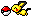
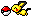
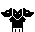
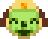
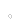
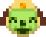
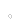
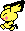
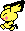

welcome to the animals' den ... 
you've stumbled into the homepage of a CHIMERA!  i'm a collection of animals who live on the web. you know this is my digital nest you've wandered into just now, right? if you'd like to - feel free to look around, stay for a little while and rest your paws.  
i'm a collection of animals who live on the web. you know this is my digital nest you've wandered into just now, right? if you'd like to - feel free to look around, stay for a little while and rest your paws.  
this website doubles as a place of artistic expression, a place to dump my thoughts, and a place to collect all of my favorite things like a dragon. it's meant to be viewed on a computer, ideally with a resolution of 1920 x 1080 - though efforts are ongoing for mobile optimization.
just for fun, this site has two little mascots that run things behind the scenes. they represent both me as collective faceclaims, and individual sections of this website. click their names to learn more!*
Critter
Primary site mascot
A virtual pet-like chimera who runs the website, hoarding it's files and using them as it's nest.
Cirrus
Secondary site mascot
A result of accidental fusion of unstable DNA between a Dragonite and a Togetic.

help a dog out!
enjoy what you see? you can personally help keep this site afloat and get a cool picture by commissioning me over on vgen, or leaving a tip on ko-fi! it really helps, and i appreciate any support greatly. you can also support me by sharing the link or button to my website (feel free to let me know on my guestbook).
thank you so, so for checking out my website!

want to link out? feel free to hotlink!

 changelog
changelog
9/12/24: added basic site mascot intros to the front page, and how to help out
5/26/24: gradually been adding mobile optimization and accessibility features nearly-sitewide: added reduced-motion static pngs and slowly adding alt text
5/3/24: slowly began to rollout animal's den 3.0 üêæ, which revamped the site layout site-wide and includes (hopefully) decent mobile responsiveness!
4/20/24: comments are now possible on journal entries
4/10/24: added soul silver hub page - reworked pokemon css
4/05/24: added pokemon guidebooks
4/01/24: april fools!
3/25/24: finished the sitemap
3/20/24: changed web hosts from neocities to nekoweb, incurring lots of small changes around the site
3/19/24: transformed pokemon hub
10/8/23: updated fennekin and flareon collections
10/5/23: added a styleswitcher
10/4/23: totally new index page! animal's den 2.0 üêæ
9/24/23: updated about... mind the gap!
5/17/23: uploaded some digimon scans and an AMV
5/2/23: added an undertale hub (finally)
4/29/23: added a digimon hub and a few pages to it
3/23/23: made a sitemap, including future site plans
3/9/23: more journal, made site wider, misc edits
3/2/23: made a journal to bitch in
2/18/23: added flareon's collection page
2/17/23: fixed iframes some more, added status to the homepage, and started on the cassettes collection!
2/15/23: figured out iframes (thank god), added an "about" page, and a small update to my fennekin collection
2/13/23: added pokemon + fennekin collection pages!
2/12/23: main site layout established now for the content!
today's video  

 thoughts
thoughts

page resource credits
page resource creditsi try to source whatever i can, and i'll try my best to keep this updated.
Dragon dividers: Quazar
Windows 7 styling: 7.css
"Reclaim the Web!" button: Aioi
Pokemon pixels, hit counter, dividers: MewHeart and other 90's geocities
TV header: Unsplash